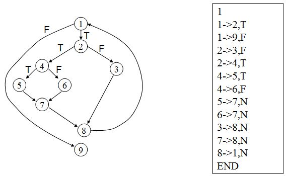
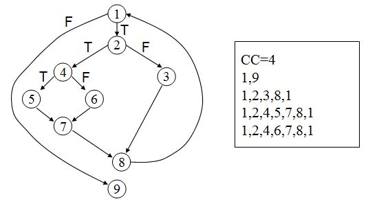

1. 白盒测试
白盒测试就是把测试对象看作一个透明的盒子，允许测试人员利用程序内部的逻辑及有关信息，设计或选择测试用例，对所有逻辑路径进行测试。
白盒测试主要对程序做如下检查：
- 对模块的每一个独立执行路径至少测试一次；
- 对所有逻辑判定的每一个分支 (真与假 )都至少测试一次；
- 在循环的边界和运行界限内执行循环体；
- 测试内部数据结构的有效性；
2. 基本路径测试法
路径测试：设计足够多的用例，使得能覆盖到测试对象的每一条可能路径。
但是有时候，要实现所有的路径都覆盖到是不太现实的，所有路径可能是一个庞大的数字，例如遇到循环体，循环次数增加一次可能伴随着路径数目的指数级增加。于是就有了基本路径测试，基本路径也叫做独立路径。
基本路径：一条程序执行的路径，至少包含一条在定义该路径之前的其他基本路径中所不曾用过的边。
3. 自动生成基本路径程序
题目要求：
输入 ：
情况一：包含多行数据。第1行表示控制流图中的入口节点的编号，表示程序由此开始执行。后续每行代表控制流图中的一条边，表示为“1->2, T/F/N”，意即有一条边从编号为1的节点指向编号为2的节点；T表示节点1为逻辑判断节点且它为真的时候指向2；F表示节点1的条件为假的时候指向2；N表示节点1是基本语句，而不是逻辑判断节点。最后一行为“END”，表示输入结束。
例如，左侧给出的控制流图，相应的输入数据如右侧所示。

情况二：输入数据中除了边信息之外，后续增加若干新行(与原有各行之间通过一行“EXT”分隔)，每一行表示控制流图中的判断节点信息，例如：1, AND, 3, OR,分别表示节点1是 if (A && B) 的形式、节点3是if (A || B)的形式。最后一行为“END”，表示输入结束。
输出 ：
输出多行数据。第一行为“CC=n”，n为一个整数，表示计算得到的圈复杂度。后续各行，每一行代表一条基本路径，格式为“1,2,3,5”的形式，逗号分隔开的是控制流图中的节点编号。
注意 ：
- 在查找基本路径时，采用深度优先搜索策略；若遇到判定节点，需遵循“先遍历false分支，再遍历true分支”的原则。
- 若某一条路径出现循环，即：该路径的后续部分已经在本路径之前出现过，则在进入循环的第一个节点处停止，后续部分不需要再包含在该路径中（例如1,2,3,9,10,2,3这样的路径，需简化为1,2,3,9,10,2即可）。
- 需根据“基本路径”的定义对每一条路径进行检查，看其中是否包含了之前其他路径中不曾出现过的边。若否，则将其去除；
- 若程序需要输出多条基本路径，按照路径长度由小到大排序输出；若两个路径的长度相等，则按相对应位置的数字大小由低到高排列（例如1,3,6,5和1,3,4,5两条路径，后者应该先输出；1,10,8,3,4和1,9,10,3,4两条路径，后者应该先输出）。
- 若存在出现复合条件表达式的情况，修改控制流图后需要引入新的节点，编号可采用在复合语句标号后增加1和2的方式来表示，例如上面举例的：
1, AND,3, OR,可对应修改为11、12，31、32来表示。（注：原有控制流图中不会出同时出现1和11、12这样的节点，因此在对其进行修改之后，不会出现编号冲突的情况。）
下图分别给出情况一和情况二的示例。

4. 思路分析
依据输入，建立有向图结构。博主在这里使用邻接矩阵的形式建立了图结构，使用数字表示语句类型，-1表示不连通，0 表示false分支，1表示true分支，2表示基本语句。
4.1 遍历函数分析
- 根据深度优先思路进行遍历，终止条件有两个：
- 遍历到返回语句，也就是没有孩子节点的节点,终止此次遍历；
- 遇到已经在当前遍历路径上的节点，终止此次遍历；
用一个栈结构、一个队列结构来进行遍历，使用一个bool 型数组 trueBranchVisitable[] 记录每个分支节点当前 false 分支是否已遍历过,即当前是否可进行 true 分支的遍历。栈中存放开始节点和遍历过程中遇到的分支节点。队列中存放当前遍历路径上的路径节点。从开始节点进入，将开始节点压入栈中，并插入到队列中：
a. 遍历与当前节点i邻接的节点：
b. 若不存在邻接顶点，则说明已遍历形成一条基本路径。
c. 若存在邻接顶点j，首先判断邻接顶点是否在队列中，即邻接顶点j是否已在此次遍历路径上。若已在队列中，则说明已形成一条基本路径。
d. 若存在邻接顶点j，则判断当前节点i与邻接顶点j构成 true 分支 or false 分支 or 基本语句，即判断graph[i][j] = 0/1/2。若为 false 分支，则判断 false 分支是否还未遍历过，即 trueBranchVisitable[i] 是否等于 false。若为 false，即 false 分支未遍历过，则进行 false 分支的遍历，将j放到路径队列中，并且说明此时节点i为分支节点，将节点i压入栈中，并设置为fasle分支已遍历过。若 trueBranchVisitable[i] 为 true，则说明 false 分支已遍历过，可进行 true 分支的遍历，则跳过此节点j，继续寻找与i节点构成 true 分支的j节点。
若为 true 分支，则判断 false 分支是否遍历过，若未遍历，则跳过此节点，继续寻找与i构成 false 分支的j节点。若 false 分支已遍历，则开始遍历 true 分支，将 j 节点加入路径队列中，并且将节点i从栈中弹出，说明节点i的 false 和 true 分支都已遍历完成。将 trueBranchVisitable[i] 重新设置为 false，以便下次遍历时判断。
- 若为基本语句，则将节点j加入路径队列中。
若已形成一条基本路径，则将队列中的所有路径节点存入路径向量中（注意保存过程中需要判断新加入路径是否引入了已遍历得到的基本路径中没有覆盖的新边，若没有引入新边，则此条基本路径需抛弃）。之后将队列元素弹出直到元素等于当前栈顶元素。栈顶元素为还为进行true 分支遍历的分支节点。
- 从当前队列尾节点即栈顶节点出发，开始遍历。若队列为空，则遍历完成。
5. 代码实现
- 遍历函数代码实现
/*
* 深度优先遍历，寻找基本路径，先F分支后T分支
*/
int DFSTraverse(Graph myGraph, int index ) {
//初始化数组
initBoolArray(visited);
initBoolArray(trueBranchVisitable);
stack<int> S; //存放当前遍历路径上判定节点
deque<int> pathQue; //存放当前遍历路径所有节点
visited[index] = true; //使用visited数组记录节点是否在路径队列中
S.push(-1);
pathQue.push_back(index);
while(!S.empty() ) {
if(!pathQue.empty())
index = pathQue.back();
else
break;
//判断是否到达出口，即为一条路径
bool isEnd = true;
for(int n = 0; n<myGraph.numVertex; n++)
{
if(myGraph.edge[index][n] != -1)
{
isEnd = false;
break;
}
}
//若到达出口，则保存基本路径，从上一个判定节点再开始遍历
if(isEnd) {
writeToPathVec(pathQue,S.top(),-1);
if(pathQue.empty())
break;
index = pathQue.back();
}
for (int j = 0; j < myGraph.numVertex; j++)
{
//判断是否遇到当前路径上的重复节点，则形成基本路径，保存基本路径
//（注意此时节点i也可能是分支节点）
if(myGraph.edge[index][j]!= -1 && visited[j] == true) {
if(myGraph.edge[index][j]==0 &&trueBranchVisitable[index]==false){
trueBranchVisitable[index] = true;
S.push(index);
}
else if(myGraph.edge[index][j] == 1
&& trueBranchVisitable[index] == true) {
trueBranchVisitable[index] = false;
S.pop();
}
else;
writeToPathVec(pathQue,S.top(),j);
break;
}
// 若i到j为基本语句，则将j加入路径队列中，从j开始遍历
if(myGraph.edge[index][j] == 2 ) {
pathQue.push_back(j);
visited[j]= true;
break;
}
// 若i到j为false分支，同时false分支未遍历过，则进入false分支遍历
// 设定false分支已遍历，将j加入到路径队列中，将i加入到判定节点栈中
// 从j开始false分支遍历
else if(myGraph.edge[index][j] == 0 &&
trueBranchVisitable[index] == false) {
trueBranchVisitable[index] = true;
visited[j] = true;
pathQue.push_back(j);
S.push(index);
break;
}
// 若i到j为true分支，同时false分支已遍历过，则进入true分支遍历
// 设定false分支未遍历（下次使用），将j加入到路径队列中，弹出栈顶分支节点
// 从j开始true分支遍历
else if(myGraph.edge[index][j] == 1
&& trueBranchVisitable[index] == true) {
trueBranchVisitable[index] = false;
visited[j] = true;
pathQue.push_back(j);
S.pop();
break;
}
}
}
}
2.路径排序函数代码实现
自定义排序规则，使用Algorithm库文件的 sort函数进行排序。
/*
* 自定义路径排序函数
* 满足弱序性
* 长度小的排在前，长度相同的按节点小的排在前
*/
bool pathSort(vector<int> va, vector<int> vb) {
if(va.size()<vb.size()) {
return true;
}
else if(va.size()>vb.size()){
return false;
}
else{
for(int i = 0; i < va.size(); i++){
if(graph.vertex[va[i]]< graph.vertex[vb[i]]){
return true;
}
else if(graph.vertex[va[i]] > graph.vertex[vb[i]]){
return false;
}
else
continue;
}
}
return true;
}
vector<vector<int> >::iterator iter,end;
iter = path.begin();
end = path.end();
sort(iter,end,pathSort);
Reference
- HIT,软件工程课程讲义